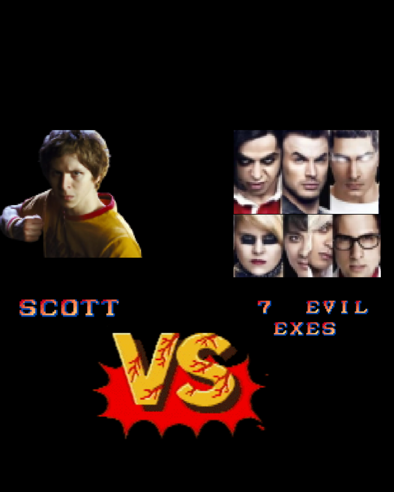

Home
Characters
Cast
Tickets
About
A game-obsessed Scott Pilgrim must defeat his new girlfriend's seven evil exes, who are willing to do anything to prevent her happiness with someone else.

Can he beat all the 7 evil exes? Find out in theaters